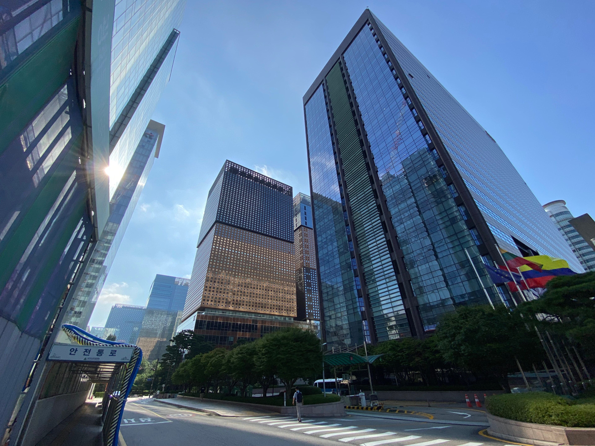

Seulda birinchi «Markaziy Osiyo – Koreya Respublikasi» sammiti o‘tkazildi
16-sentabr kuni Koreya prezidenti Li Che Myon mintaqaning besh davlati rahbarini qabul qildi. 2007-yildan beri vazirlar darajasida ishlagan hamkorlik forumi liderlar darajasiga ko‘tarildi; sammitda Seul deklaratsiyasi qabul qilinishi rejalashtirilgan.

2026-yil 16-sentabr kuni Seulda birinchi «Markaziy Osiyo – Koreya Respublikasi» sammiti bo‘lib o‘tdi. Unda Koreya Respublikasi prezidenti Li Che Myon va mintaqaning besh davlati rahbari ishtirok etdi: Qasim-Jomart Toqayev (Qozog‘iston), Sadir Japarov (Qirg‘iziston), Emomali Rahmon (Tojikiston), Serdar Berdimuhamedov (Turkmaniston) va Shavkat Mirziyoyev (O‘zbekiston).
Bu — Koreyaning Markaziy Osiyo davlatlari bilan birinchi ko‘p tomonlama sammiti. Koreya–Markaziy Osiyo hamkorlik forumi 2007-yilda tashkil etilgan va shu vaqtgacha vazirlar darajasida ishlab kelgan edi.
Sammit kun tartibi
Koreya tomoni sammitda Seul deklaratsiyasi qabul qilinishini e’lon qilgan edi. Hujjat o‘rta va uzoq muddatli hamkorlik ko‘rinishini belgilaydi hamda muntazam sammit formatiga huquqiy-siyosiy asos yaratadi.
Muzokaralarning asosiy yo‘nalishlari sifatida kritik minerallar, energetika, barqaror ta’minot zanjirlari, savdo va investitsiyalar ko‘rsatildi. The Times of Central Asia ma’lumotiga ko‘ra, tadbirga hukumat va biznes doiralaridan 500 ga yaqin vakil taklif qilingan.
Ikki tomonlama uchrashuvlar
Sammit oldidan Li Che Myon besh davlat rahbari bilan alohida uchrashdi: 14-sentabrda O‘zbekiston, 15-sentabrda Turkmaniston va Qozog‘iston, 16-sentabrda Tojikiston va Qirg‘iziston bilan.
14-sentabrdagi O‘zbekiston–Koreya muzokaralari yakunida 13 ta hujjat va memorandum almashildi; ular transport, aviatsiya, qishloq xo‘jaligi, ta’lim va kritik minerallar yo‘nalishlarini qamrab oldi.
Raqamlarda
- Koreya–Markaziy Osiyo savdosi (2025): 10 mlrd dollar — 2021-yilga nisbatan +90%
- Koreyaning mintaqaga yillik investitsiyasi: 117 mln dollar — 2021-yilga nisbatan +69%
- Qozog‘iston–Koreya savdosi (2025): 3,17 mlrd dollar (+1,3%)
- Qozog‘iston–Koreya savdosi (2026-yil yanvar–iyun): 1,3 mlrd dollar
- Qozog‘istonning Koreyaga eksporti (2026-yil 6 oyi): +17,2%
- Koreyaning Qozog‘istonga investitsiyalari (2005-yildan beri): 12 mlrd dollardan ortiq
- O‘zbekistonda faoliyat yurituvchi koreys kompaniyalari: 700 dan ortiq
- Sammit ishtirokchilari: 5 davlat rahbari, ~500 vakil
Rasmiy bayonotlar
Koreya Markaziy Osiyoni beshta alohida sherik emas, yagona mintaqa sifatida ko‘rish zarurligini erta anglagan.
— Nam Jin, Koreya Tashqi ishlar vazirligi Shimoli-Sharqiy va Markaziy Osiyo bosh boshqarmasi direktori (The Korea Times tarjimasidan, 16.09.2026)
Nam Jin shuningdek an’anaviy sohalardan tashqari sun’iy intellekt, raqamli texnologiyalar va iqlim yechimlari kabi yangi yo‘nalishlarga kengayish kelgusi o‘sish uchun asos yaratishini aytdi.
Markaziy Osiyo — geosiyosiy markaz va energiya hamda kritik minerallarga boy, yuqori o‘sish salohiyatiga ega mintaqa.
— Li Che Myon, Koreya Respublikasi Prezidenti (Prezident devonidagi yig‘ilish, sentabr 2026)
Qozog‘iston yo‘nalishi
Sammit oldidan o‘tkazilgan Koreya–Qozog‘iston biznes forumida umumiy qiymati 54,8 mln dollarlik tijorat hujjatlari imzolandi. Ular orasida 13 mln dollarlik 1 000 tonna qozoq mol go‘shti eksporti, oyiga 3 000 tonna tozalangan kungaboqar yog‘i yetkazib berish va 1,3 mln dollarlik qo‘shma go‘sht ishlab chiqarish loyihasi bor.
Qozog‘iston Koreyaning ish bilan ta’minlash tizimiga (Employment Permit System) 18-davlat sifatida qabul qilindi. Bu tizim koreys ish beruvchilariga tanlangan davlatlardan malakasi past ishchilarni rasmiy jalb qilish imkonini beradi.
Energetika va transport
Koreyaning kichik modulli reaktor (SMR) yo‘nalishidagi birinchi loyihasi taxminan 700 MVt quvvatga mo‘ljallangan; qurilish 2031-yilda boshlanib, 2035-yilda yakunlanishi rejalashtirilgan.
Transport yo‘nalishida 2024-yil iyunida Koreya–Xitoy–Qozog‘iston–O‘zbekiston yo‘nalishi bo‘yicha birinchi sinov konteyner poyezdi yo‘lga chiqarilgan edi.
Kontekst
Koreya Respublikasi so‘nggi yillarda kritik minerallar ta’minotini diversifikatsiya qilishga harakat qilmoqda. Markaziy Osiyo davlatlari esa tashqi siyosatda ko‘p vektorli yondashuvni saqlagan holda Osiyo bozorlariga chiqish imkoniyatlarini kengaytirmoqda.
Astana Times bilan suhbatda Qozog‘iston strategik tadqiqotlar institutining Osiyo tadqiqotlari bo‘limi rahbari Aydar Kurmashev imzolangan hujjatlarni baholashda ehtiyotkorlikka chaqirdi.
Imzolangan memorandum allaqachon kiritilgan pul sifatida hisoblanmasligi kerak.
— Aydar Kurmashev, Qozog‘iston strategik tadqiqotlar instituti Osiyo tadqiqotlari bo‘limi rahbari (The Astana Times tarjimasidan, sentabr 2026)